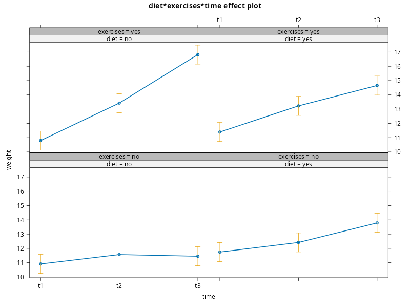
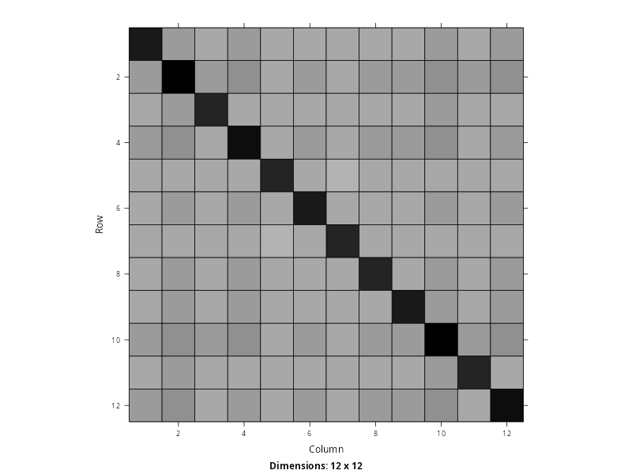
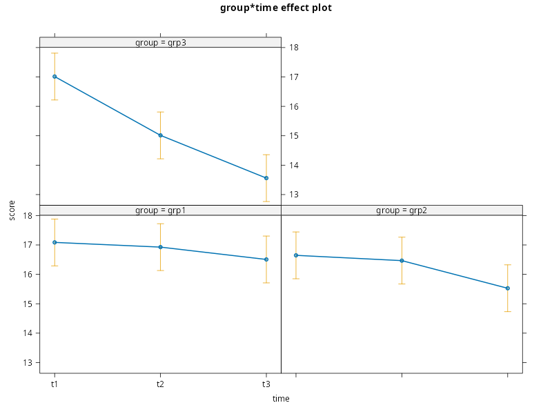
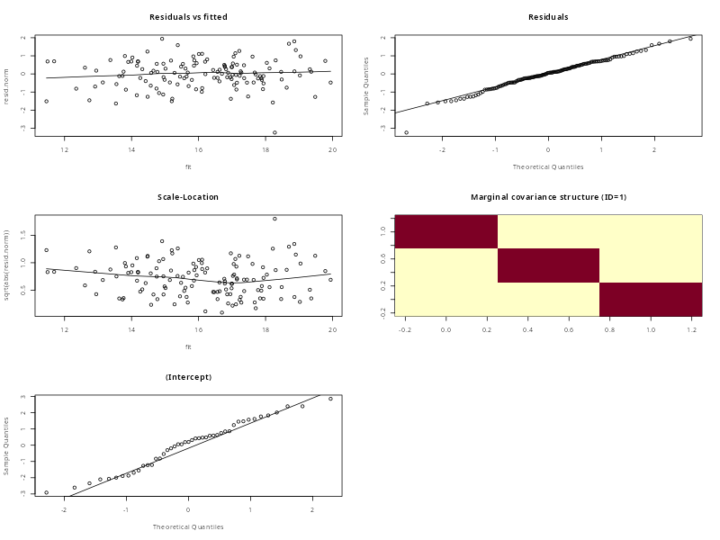

PCHN63112 Workshop: Introduction to Mixed-effects#
In the associated lesson, we introduced the mixed-effects framework as a more general approach to dealing with dependence in our data. This initial introduction kept the model quite simple and our exposition of the theory and logic was somewhat limited. However, you should have some sense of what these models are doing, even if it does not feel completely clear at present. The materials for this week will dig into this much more to try and expose the full framework to you. For now, our aim is just to play around with some different model specifications and examine the effects on the assumed covariance structure and inference. In this workshop, we will present some further examples of mixed-effects models, as applied to the datasets used for discussing GLS last week. We will also examine assumptions testing using a visual approach similar to those used for lm() and gls() last week. The aim is not to be fully familiar at this point, rather it is to gain exposure to this approach to start building your intuition.
Multiple Within-subject Factors#
We will start with an example of a mixed-effects model applied to multiple within-subject factors. As with last week, we will use the weightloss dataset included with datarium. Below is the code for loading the data, restructuring it into long-format and then printing the values associated with the first subject.
library('datarium')
library('reshape2')
data('weightloss')
# repeats and number of subjects
t <- 12 # 2 * 2 * 3
n <- 12
# reshape wide -> long
weightloss.long <- melt(weightloss, # wide data frame
id.vars=c('id','diet','exercises'), # what stays fixed?
variable.name="time", # name for the new predictor
value.name="weight") # name for the new outcome
weightloss.long <- weightloss.long[order(weightloss.long$id),] # order by ID
rownames(weightloss.long) <- seq(1,n*t) # fix row names
weightloss.long$id <- as.factor(weightloss.long$id) # id as factor
weightloss.long$diet <- as.factor(weightloss.long$diet) # diet as factor
weightloss.long$exercises <- as.factor(weightloss.long$exercises) # exercises as factor
weightloss.long$time <- as.factor(weightloss.long$time) # time as factor
weightloss.long[weightloss.long$id == '1',]
id diet exercises time weight
1 1 no no t1 10.43
2 1 no yes t1 11.12
3 1 yes no t1 10.20
4 1 yes yes t1 10.43
5 1 no no t2 13.21
6 1 no yes t2 12.51
7 1 yes no t2 12.51
8 1 yes yes t2 12.51
9 1 no no t3 11.59
10 1 no yes t3 15.76
11 1 yes no t3 14.60
12 1 yes yes t3 14.37
Basic Random-effects Structure#
The most basic model we can fit includes a random intercept per-subject. We will discuss the process of building these models in more detail next week, so do not worry too much about the theory behind this. The aim here is just to explore more examples of basic mixed-effects models.
We can specify this using the syntax below, where we use random= ~ 1|id for the random-effects.
library(nlme)
weightloss.lme.0 <- lme(weight ~ diet*exercises*time, random= ~ 1|id, data=weightloss.long)
summary(weightloss.lme.0)
Linear mixed-effects model fit by REML
Data: weightloss.long
AIC BIC logLik
469.9397 510.2989 -220.9699
Random effects:
Formula: ~1 | id
(Intercept) Residual
StdDev: 0.317161 1.120828
Fixed effects: weight ~ diet * exercises * time
Value Std.Error DF t-value p-value
(Intercept) 10.909167 0.3362595 121 32.44270 0.0000
dietyes 0.833333 0.4575760 121 1.82119 0.0710
exercisesyes -0.115000 0.4575760 121 -0.25132 0.8020
timet2 0.656667 0.4575760 121 1.43510 0.1538
timet3 0.540833 0.4575760 121 1.18195 0.2395
dietyes:exercisesyes -0.234167 0.6471102 121 -0.36187 0.7181
dietyes:timet2 0.016667 0.6471102 121 0.02576 0.9795
dietyes:timet3 1.503333 0.6471102 121 2.32315 0.0218
exercisesyes:timet2 1.970000 0.6471102 121 3.04430 0.0029
exercisesyes:timet3 5.482500 0.6471102 121 8.47228 0.0000
dietyes:exercisesyes:timet2 -0.811667 0.9151520 121 -0.88692 0.3769
dietyes:exercisesyes:timet3 -4.265000 0.9151520 121 -4.66043 0.0000
Correlation:
(Intr) dietys exrcss timet2 timet3 dtys:x dtys:2 dtys:3 exrc:2 exrc:3 dty::2
dietyes -0.680
exercisesyes -0.680 0.500
timet2 -0.680 0.500 0.500
timet3 -0.680 0.500 0.500 0.500
dietyes:exercisesyes 0.481 -0.707 -0.707 -0.354 -0.354
dietyes:timet2 0.481 -0.707 -0.354 -0.707 -0.354 0.500
dietyes:timet3 0.481 -0.707 -0.354 -0.354 -0.707 0.500 0.500
exercisesyes:timet2 0.481 -0.354 -0.707 -0.707 -0.354 0.500 0.500 0.250
exercisesyes:timet3 0.481 -0.354 -0.707 -0.354 -0.707 0.500 0.250 0.500 0.500
dietyes:exercisesyes:timet2 -0.340 0.500 0.500 0.500 0.250 -0.707 -0.707 -0.354 -0.707 -0.354
dietyes:exercisesyes:timet3 -0.340 0.500 0.500 0.250 0.500 -0.707 -0.354 -0.707 -0.354 -0.707 0.500
Standardized Within-Group Residuals:
Min Q1 Med Q3 Max
-2.4599506 -0.6916938 0.1093729 0.6290647 2.6887743
Number of Observations: 144
Number of Groups: 12
Notice that there are only two variances in this model, as indicated by StdDev under the Random effects: section. This indicates already that this model is assuming compound symmetry and so, at present, is not much improvement over a repeated measures ANOVA.
Putting this to one side, we can generate an ANOVA table as usual
library(car)
Anova(weightloss.lme.0)
Loading required package: carData
Analysis of Deviance Table (Type II tests)
Response: weight
Chisq Df Pr(>Chisq)
diet 4.0687 1 0.04368 *
exercises 56.6472 1 5.215e-14 ***
time 168.2687 2 < 2.2e-16 ***
diet:exercises 26.5860 1 2.521e-07 ***
diet:time 1.9260 2 0.38174
exercises:time 53.6780 2 2.208e-12 ***
diet:exercises:time 24.4971 2 4.792e-06 ***
---
Signif. codes: 0 ‘***’ 0.001 ‘**’ 0.01 ‘*’ 0.05 ‘.’ 0.1 ‘ ’ 1
which is suggestive of a 3-way interaction between diet, exercises and time. We can plot this using effects
library(effects)
plot(effect('diet:exercises:time', weightloss.lme.0))
lattice theme set by effectsTheme()
See ?effectsTheme for details.

which is strongly suggestive of a combined effect of both diet and exercises on the amount of weight loss over time.
emmeans?
Multilevel Conceptualisation#
To connect with the materials from the lesson, the multilevel conceptualisation of this model is as follows
where \(i\) indexes subject, \(j\) indexes diet, \(k\) indexes exercises and \(t\) indexes time.
This looks quite complicated, but we can think of it in a very similar fashion to a 3-way repeated measures ANOVA. However, notice that there are only two error terms here: \(\eta_{ijkt}\) and \(\xi_{i}\).
More Complex Random-effect Specifications#
The simplicity of the random effects structure given above is directly translated into a simple covariance structure. If we believe this structure is too simplistic, we need to make adjustments to the random effects themselves. The logic of building these models from first principles will be given in the materials this week, so do not worry about this too much right now. The point is to see how the covariance structure is tied to the random effects themselves.
Last week, we saw that this particular dataset causes problems for gls() due to how large a completely unstructured covariance matrix would be. There are similar constraints at play here, but mixed-effects models actually provide more options. To start with, we will check the covariance structure currently in use
library('Matrix')
Sigma <- getVarCov(weightloss.lme.0, individual='1', type='marginal')$`1`
print(Sigma)
image(as(Sigma,'Matrix'))
1 2 3 4 5 6 7 8 9 10 11 12
1 1.3568458 0.1005911 0.1005911 0.1005911 0.1005911 0.1005911 0.1005911 0.1005911 0.1005911 0.1005911 0.1005911 0.1005911
2 0.1005911 1.3568458 0.1005911 0.1005911 0.1005911 0.1005911 0.1005911 0.1005911 0.1005911 0.1005911 0.1005911 0.1005911
3 0.1005911 0.1005911 1.3568458 0.1005911 0.1005911 0.1005911 0.1005911 0.1005911 0.1005911 0.1005911 0.1005911 0.1005911
4 0.1005911 0.1005911 0.1005911 1.3568458 0.1005911 0.1005911 0.1005911 0.1005911 0.1005911 0.1005911 0.1005911 0.1005911
5 0.1005911 0.1005911 0.1005911 0.1005911 1.3568458 0.1005911 0.1005911 0.1005911 0.1005911 0.1005911 0.1005911 0.1005911
6 0.1005911 0.1005911 0.1005911 0.1005911 0.1005911 1.3568458 0.1005911 0.1005911 0.1005911 0.1005911 0.1005911 0.1005911
7 0.1005911 0.1005911 0.1005911 0.1005911 0.1005911 0.1005911 1.3568458 0.1005911 0.1005911 0.1005911 0.1005911 0.1005911
8 0.1005911 0.1005911 0.1005911 0.1005911 0.1005911 0.1005911 0.1005911 1.3568458 0.1005911 0.1005911 0.1005911 0.1005911
9 0.1005911 0.1005911 0.1005911 0.1005911 0.1005911 0.1005911 0.1005911 0.1005911 1.3568458 0.1005911 0.1005911 0.1005911
10 0.1005911 0.1005911 0.1005911 0.1005911 0.1005911 0.1005911 0.1005911 0.1005911 0.1005911 1.3568458 0.1005911 0.1005911
11 0.1005911 0.1005911 0.1005911 0.1005911 0.1005911 0.1005911 0.1005911 0.1005911 0.1005911 0.1005911 1.3568458 0.1005911
12 0.1005911 0.1005911 0.1005911 0.1005911 0.1005911 0.1005911 0.1005911 0.1005911 0.1005911 0.1005911 0.1005911 1.3568458
Unsurprisingly, this is compound symmetric. If we believe this is too simplistic, what options do we have?
Using a process that we will detail later, we should be able to fit a model per-subject that contains all random effects up to a 2-way interaction. This would have the form random= ~ 1 + diet + exercises + time + diet:exercises + diet:time + exercises:time or, more concisely, random= ~ 1 + (diet + exercises + time)^2. This echoes the error terms used in the repeated measures ANOVA and encodes the belief that each individual will vary uniquely in their response to diet, exercises and time, as well as the relationship between them.
Unfortunately, the covariance structure implied by this specification is too complex to fit. This is not a problem of theory, rather it is a limitation of the software. The REML estimation procedure will keep iterating for a very long time, never converge and then stop. This will happen sometimes when using these methods. Our general rule-of-thumb is:
< 5 seconds = normal
5–30 seconds = moderately complex but fine
30–60 seconds = suspicious
1–2 minutes = usually a model problem
In this case, several minutes can pass without convergence and so we are forced to simplify. In order to do so, we forget the interactions and just fit the main effects of each term as follows
weightloss.lme.1 <- lme(weight ~ diet*exercises*time, random= ~ 1 + diet + exercises + time|id, data=weightloss.long, control=lmeControl(opt='optim'))
This still requires us to change the optimisation algorithm using the control= option. The default used by lme() is a bit flaky and will often complain of a lack of convergence after its default number of iterations has passed. When this happens, our first method for solving this is to change the algorithm. If this still fails, we can try changing the number of iterations by setting control=lmeControl(opt='optim', msMaxIter=200). If this still does not work, then it points to a more fundamental issue with the model specification.
Importantly, the implication of these random effects is that diet, exercises and time are allowed to vary from subject-to-subject. We assume that there is something fundamental about different individuals that changes how their weight responds to diet, exercises and time. However, we are forced to assume that the way these aspects interact is the same irrespective of the individual. So the way a person’s weight responds to diet or exercises is different. Some people fundamentally respond better to diet over exercises, for instance. However, the way that these two aspects compound is the same across everyone. So, irrespective of how well a person responds to diet or exercises, their combination is always beneficial in a way that does not depend upon the specific individual.
We will discuss more about these interpretations in the materials this week. For now, the point is to see how different random effects structures change the covariance matrix. So let us now extract the new covariance matrix and see how it compares.
Sigma <- getVarCov(weightloss.lme.1, individual='1', type='marginal')$`1`
print(Sigma)
image(as(Sigma,'Matrix'))
1 2 3 4 5 6 7 8 9 10 11
1 1.32509853 0.17708806 0.07621213 0.15019008 0.043238063 0.11721601 0.016340089 0.09031804 0.10307520 0.17705315 0.07617723
2 0.17708806 1.52806845 0.13098813 0.25998010 0.074706712 0.20369868 0.028606783 0.15759875 0.17701438 0.30600635 0.13091445
3 0.07621213 0.13098813 1.27867294 0.11146051 0.032184773 0.08696077 0.012657156 0.06743315 0.07618479 0.13096078 0.05665717
4 0.15019008 0.25998010 0.11146051 1.44323895 0.063653421 0.17344344 0.024923850 0.13471387 0.15012397 0.25991398 0.11139440
5 0.04323806 0.07470671 0.03218477 0.06365342 1.240963620 0.05044384 0.007921905 0.03939055 0.04321478 0.07468343 0.03216149
6 0.11721601 0.20369868 0.08696077 0.17344344 0.050443844 1.35891494 0.020188599 0.10667127 0.11715396 0.20363663 0.08689872
7 0.01634009 0.02860678 0.01265716 0.02492385 0.007921905 0.02018860 1.226227396 0.01650567 0.01632437 0.02859106 0.01264143
8 0.09031804 0.15759875 0.06743315 0.13471387 0.039390553 0.10667127 0.016505666 1.30577480 0.09026354 0.15754426 0.06737866
9 0.10307520 0.17701438 0.07618479 0.15012397 0.043214782 0.11715396 0.016324366 0.09026354 1.32505431 0.17700507 0.07617547
10 0.17705315 0.30600635 0.13096078 0.25991398 0.074683430 0.20363663 0.028591060 0.15754426 0.17700507 1.52794669 0.13091270
11 0.07617723 0.13091445 0.05665717 0.11139440 0.032161491 0.08689872 0.012641433 0.06737866 0.07617547 0.13091270 1.27864384
12 0.15015518 0.25990642 0.11143317 0.22118441 0.063630139 0.17338138 0.024908127 0.13465937 0.15011465 0.25986590 0.11139264
12
1 0.15015518
2 0.25990642
3 0.11143317
4 0.22118441
5 0.06363014
6 0.17338138
7 0.02490813
8 0.13465937
9 0.15011465
10 0.25986590
11 0.11139264
12 1.44313231

So notice that we have now achieved the aim we had last week of a completely unstructured covariance matrix. This was too complex to fit using gls(), but we have managed it using a mixed-effects model.
diet and exercises affect different people in different ways, but that time affects everyone in the same way. How could you integrate this assumption into the model?
Within-subject and Between-subject Factors#
As well as multiple within-subject factors, we can also revisit the example from last week of the anxiety dataset which contains both a within-subject and between-subjects factor. We load and wrangle the data below
data('anxiety')
# repeats and number of subjects
t <- 3
n <- 45
# reshape wide -> long
anxiety.long <- melt(anxiety, # wide data frame
id.vars=c('id','group'), # both id and group stay fixed
variable.name='time', # name for the new predictor
value.name='score') # name for the new outcome
anxiety.long <- anxiety.long [order(anxiety.long$id),] # order by ID
rownames(anxiety.long) <- seq(1,n*t) # fix row names
anxiety.long$id <- as.factor(anxiety.long$id) # id as factor
anxiety.long$group <- as.factor(anxiety.long$group) # group as factor
anxiety.long$time <- as.factor(anxiety.long$time) # time as factor
head(anxiety.long)
id group time score
1 1 grp1 t1 14.1
2 1 grp1 t2 14.4
3 1 grp1 t3 14.1
4 2 grp1 t1 14.5
5 2 grp1 t2 14.6
6 2 grp1 t3 14.3
As we can see, this is much simpler than the weightloss dataset. But with this simplicity comes fewer options.
Random-effect Specification#
Unlike the previous example, there are no replications within the repeated measurements. Each subject only has a single score at each time-point. Our heuristic is that we can therefore only use a random intercept model. Again, the logic of this will be more explicitly laid out in the materials this week.
We can fit the model using the syntax below with random= ~ 1|id used for the random effects
anxiety.lme.0 <- lme(score ~ group*time, random= ~ 1|id, data=anxiety.long)
summary(anxiety.lme.0)
Linear mixed-effects model fit by REML
Data: anxiety.long
AIC BIC logLik
278.6349 309.834 -128.3174
Random effects:
Formula: ~1 | id
(Intercept) Residual
StdDev: 1.53169 0.2903382
Fixed effects: score ~ group * time
Value Std.Error DF t-value p-value
(Intercept) 17.086667 0.4025229 84 42.44893 0.0000
groupgrp2 -0.440000 0.5692534 42 -0.77294 0.4439
groupgrp3 -0.073333 0.5692534 42 -0.12882 0.8981
timet2 -0.160000 0.1060165 84 -1.50920 0.1350
timet3 -0.580000 0.1060165 84 -5.47084 0.0000
groupgrp2:timet2 -0.020000 0.1499300 84 -0.13340 0.8942
groupgrp3:timet2 -1.840000 0.1499300 84 -12.27239 0.0000
groupgrp2:timet3 -0.540000 0.1499300 84 -3.60168 0.0005
groupgrp3:timet3 -2.873333 0.1499300 84 -19.16450 0.0000
Correlation:
(Intr) grpgr2 grpgr3 timet2 timet3 grp2:2 grp3:2 grp2:3
groupgrp2 -0.707
groupgrp3 -0.707 0.500
timet2 -0.132 0.093 0.093
timet3 -0.132 0.093 0.093 0.500
groupgrp2:timet2 0.093 -0.132 -0.066 -0.707 -0.354
groupgrp3:timet2 0.093 -0.066 -0.132 -0.707 -0.354 0.500
groupgrp2:timet3 0.093 -0.132 -0.066 -0.354 -0.707 0.500 0.250
groupgrp3:timet3 0.093 -0.066 -0.132 -0.354 -0.707 0.250 0.500 0.500
Standardized Within-Group Residuals:
Min Q1 Med Q3 Max
-3.37115621 -0.48292646 0.06398687 0.51738361 2.03335172
Number of Observations: 135
Number of Groups: 45
We can continue with our usual approach of generating omnibus tests
Anova(anxiety.lme.0)
Analysis of Deviance Table (Type II tests)
Response: score
Chisq Df Pr(>Chisq)
group 8.7036 2 0.01288 *
time 789.8190 2 < 2e-16 ***
group:time 440.7504 4 < 2e-16 ***
---
Signif. codes: 0 ‘***’ 0.001 ‘**’ 0.01 ‘*’ 0.05 ‘.’ 0.1 ‘ ’ 1
and can plot the group:time effect
plot(effect('group:time', anxiety.lme.0), x.var='time')

where there appears to be a clear change in the effect of time depending upon the group.
emmeans? Remember to check that your inferential approach is consistent with the method used by Anova().
Multilevel Conceptualisation#
As we saw earlier, we can present the multilevel version of this model. Again, the process of building this will be given in much more detail in the materials this week, so do not worry about understanding every aspect of this. The aim is that, by the end of next week, you would be able to build the model below from first principles and will understand where its various elements have come from.
For now, notice that the between-subjects factor enters at Level 2. This again echoes how this effects are split into error terms in the repeated measures ANOVA. In these very basic models we can think of Level 1 in relation to the within-subject elements of the data and Level 2 in relation to the between-subjects elements of the data.
Including a weights= Structure#
As mentioned, the lack of replications limits the random-effects structure. If we were using the lme4 package, we would have no further options and would be forced to accept compound symmetry. However, an advantage of lme() is that we have access to same weights= options as gls(). This means that we can make the structure more general across the levels of group by allowing different variances. The syntax for this is
anxiety.lme.1 <- lme(score ~ group*time, random= ~ 1|id, weights=varIdent(form= ~ 1|group), data=anxiety.long)
summary(anxiety.lme.1)
Linear mixed-effects model fit by REML
Data: anxiety.long
AIC BIC logLik
281.9984 318.8701 -127.9992
Random effects:
Formula: ~1 | id
(Intercept) Residual
StdDev: 1.53192 0.3013514
Variance function:
Structure: Different standard deviations per stratum
Formula: ~1 | group
Parameter estimates:
grp1 grp2 grp3
1.0000000 0.8785575 1.0062156
Fixed effects: score ~ group * time
Value Std.Error DF t-value p-value
(Intercept) 17.086667 0.4031204 84 42.38602 0.0000
groupgrp2 -0.440000 0.5688857 42 -0.77344 0.4436
groupgrp3 -0.073333 0.5701645 42 -0.12862 0.8983
timet2 -0.160000 0.1100380 84 -1.45404 0.1497
timet3 -0.580000 0.1100380 84 -5.27091 0.0000
groupgrp2:timet2 -0.020000 0.1464731 84 -0.13654 0.8917
groupgrp3:timet2 -1.840000 0.1561016 84 -11.78720 0.0000
groupgrp2:timet3 -0.540000 0.1464731 84 -3.68668 0.0004
groupgrp3:timet3 -2.873333 0.1561016 84 -18.40682 0.0000
Correlation:
(Intr) grpgr2 grpgr3 timet2 timet3 grp2:2 grp3:2 grp2:3
groupgrp2 -0.709
groupgrp3 -0.707 0.501
timet2 -0.136 0.097 0.096
timet3 -0.136 0.097 0.096 0.500
groupgrp2:timet2 0.103 -0.129 -0.072 -0.751 -0.376
groupgrp3:timet2 0.096 -0.068 -0.137 -0.705 -0.352 0.530
groupgrp2:timet3 0.103 -0.129 -0.072 -0.376 -0.751 0.500 0.265
groupgrp3:timet3 0.096 -0.068 -0.137 -0.352 -0.705 0.265 0.500 0.530
Standardized Within-Group Residuals:
Min Q1 Med Q3 Max
-3.2426010 -0.4701193 0.0582123 0.5556083 1.9395237
Number of Observations: 135
Number of Groups: 45
id of the first subject from each level of group. Extract the covariance matrices for each of these subjects and compare them.
Model Comparisons#
We can also use model comparisons to determine whether these types of choice are supported by the data. For instance, to see if the weights= structure is needed, we can use
mod.0 <- lme(score ~ group*time, random= ~ 1|id, data=anxiety.long, method='ML')
mod.1 <- lme(score ~ group*time, random= ~ 1|id, weights=varIdent(form= ~ 1|group), data=anxiety.long, method='ML')
anova(mod.0,mod.1)
Model df AIC BIC logLik Test L.Ratio p-value
mod.0 1 11 261.5386 293.4966 -119.7693
mod.1 2 13 264.8566 302.6252 -119.4283 1 vs 2 0.6819275 0.7111
group is needed or not? How does the assumption of homogeneity of variance affect the inference?
Model Assumptions#
Assessing the assumptions of a mixed-effects model is very similar in spirit to what we have seen previously, particularly given the discussion of GLS in the last workshop. Below, we present a function similar to the plot.gls() function we created last week. The key differences are
An explicit
vcov.idis needed to extract the marginal covariance matrix for a single individualThe normality of the random effects needs to be checked and so additional QQ-normal plots are added dynamically, depending upon the number of random effects in the model.
plot.lme <- function(mod, vcov.id){
resid.norm <- resid(mod, type="normalized")
fit <- fitted(mod)
rand.effs <- random.effects(mod)
rand.names <- colnames(rand.effs)
n.rand <- dim(rand.effs)[2]
n.rows <- 2 + ceiling(n.rand/2)
par(mfrow=c(n.rows,2))
# Residuals vs fitted
plot(fit, resid.norm, main='Residuals vs fitted')
lines(lowess(fit,resid.norm))
# Normal Q-Q
qqnorm(resid.norm, main="Residuals")
qqline(resid.norm)
# Scale-Location
plot(fit, sqrt(abs(resid.norm)), main='Scale-Location')
lines(lowess(fit,sqrt(abs(resid.norm))))
# Visualisation of the marginal covariance structure
V <- getVarCov(mod, type='marginal', individual=vcov.id)[[vcov.id]]
graphics::image(as.matrix(V)[nrow(V):1, ], main=paste0('Marginal covariance structure (ID=', vcov.id, ')'))
## Normal Q-Q of the random effects
for (i in 1:n.rand){
RE <- rand.effs[,i]
qqnorm(RE, main=rand.names[i])
qqline(RE)
}
}
We can use this function with the last model of anxiety that we fit
plot.lme(anxiety.lme.1, vcov.id='1')

Of note is that the normalised residuals are used because they have had the covariance structure removed. If we have captured the correlational and variance differences correctly, there should be no structure left here. In addition, we have the normality of the random effects to consider.
In general, the normality assumption for random effects is there to make estimation possible. Minor deviations are not really that important. If the distribution looks very non-normal, the first suspicion should be that the model is missing structure (e.g. additional groups that are not captured by the current random effects). Another possibility is that some of the individuals in the model have unusual data. So, any non-normality here points towards either model misspecification or some particularly odd cases. Beyond dealing with these possibilities, there is not much we can do if normality appears poorly met.
vcov.id.